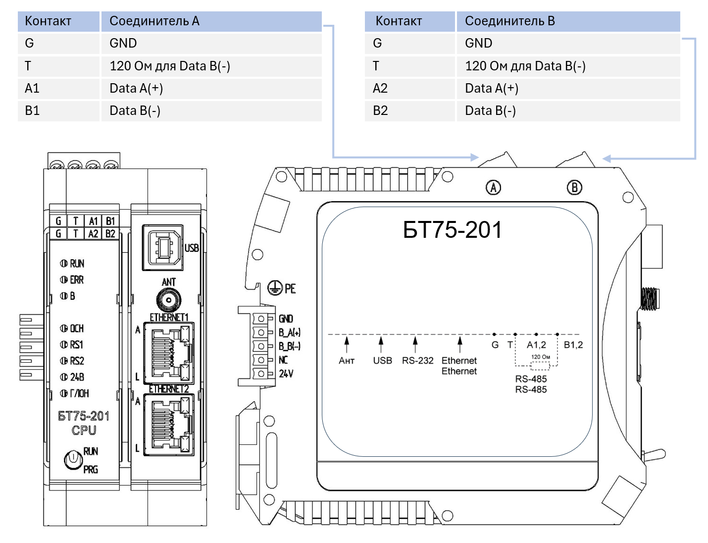

Модуль процессорный БТ75-201¶
Технические характеристики¶
Процессор и память
- Микропроцессор - 1890ВМ108
- Частота микропроцессора - 200 МГц
- ОЗУ - DDR3, не менее 256 Мбайт
- ППЗУ - не менее 16 Мбайт
- ППЗУ NAND - 256 Мбайт
- Встроенные часы реального времени - есть
- Календарь - есть
Коммуникационные интерфейсы
- Интерфейс Ethernet 10/100 Base-TХ - 2
- Технологический интерфейс USB 2.0 - 1
- RS-485 для подключения внешних абонентов - 2
- RS-485 для подключения модуля на общую внутреннюю шину - 1
- Антенна для подключения модуля GPS/ГЛОНАСС - 1
Источник питания
- Напряжение питания - 24 В
- Потребляемая мощность - не более 15,6 Вт
Габаритные размеры
- Без учета шинного соединителя - 45,2х103,5х119 мм
- С учетом шинного соединителя - 51,8х103,5х119 мм
- Масса изделия - не более 0,19 кг
Внешние подключения¶

Описание модуля¶
Модуль БТ75-201 состоит из двух основных функциональных узлов:
- процессорная плата - содержит микропроцессор 1890ВМ108, микросхемы ОЗУ и ППЗУ, подсистему индикации и управления, устройство связи ГЛОНАСС, электронные компоненты для подключения интерфейсов ETHERNET и USB, источники питания, формирующие необходимые напряжения для функционирования модуля.
- узел, обеспечивающий обмен данными микропроцессора по системным шинам. В его состав входят электронные компоненты для подключения интерфейсов каналов RS-485.
Электропитание на модуль подается с модуля питания БТ75-001 посредством шины питания.
На передней панели модуля расположены:
- индикаторы "RUN", "ERR", "B" - отражают текущее состояние модуля;
- индикаторы "ОСН", "RS1", " RS2", "24В", "ГЛОН" - отражают состояние системы питания модуля, его режим работы, наличие обменов по интерфейсам RS-485;
- разъемы для подключения внешних электрических цепей к интерфейсам USB, Ethernet, устройства связи ГЛОНАСС «ANT».
На верхней панели модуля распологаются соединители А и В для подключения внешних электрических цепей к интерфейсам RS-485.
На задней панели модуля расположен соединитель, предназначенный для подключения модуля к шине питания и внутренним шинам данных.
Таблица состояний индикаторов¶
| Наименование индикатора | Назначение индикатора | Состояние индикатора | Состояние модуля/канала |
|---|---|---|---|
| 24В | Индикация состояния входного напряжения | Горит зеленым | Входное напряжение на модуль подано |
| ГЛОН | Индикация состояния системы ГЛОНАСС | Мигает зеленым | Входное напряжение на модуль подано |
| ОСН | Индикация режима работы модуля | Горит зеленым | Модуль является основным модулем центрального процессора при работе в режиме резервирования |
| Погашен | Модуль является резервным модулем центрального процессора при работе в режиме резервирования или режим резервирования не включен | ||
| RS1, RS2 | Наличие обмена по каналам RS-485 | Мигает зеленым | Модуль осуществляет обмен данными (прием или передача) по соответствующему каналу RS-485 |
| RUN | Индикация статуса модуля | Мигает зеленым | Модуль исполняет программу пользователя |
| ERR | Индикация исправности модуля | Горит красным | Модуль неисправен |
| B | Наличие обмена по внутренним шинам данных | Мигает зеленым | Модуль осуществляет обмен данными (прием или передача) по внутренней шине данных |